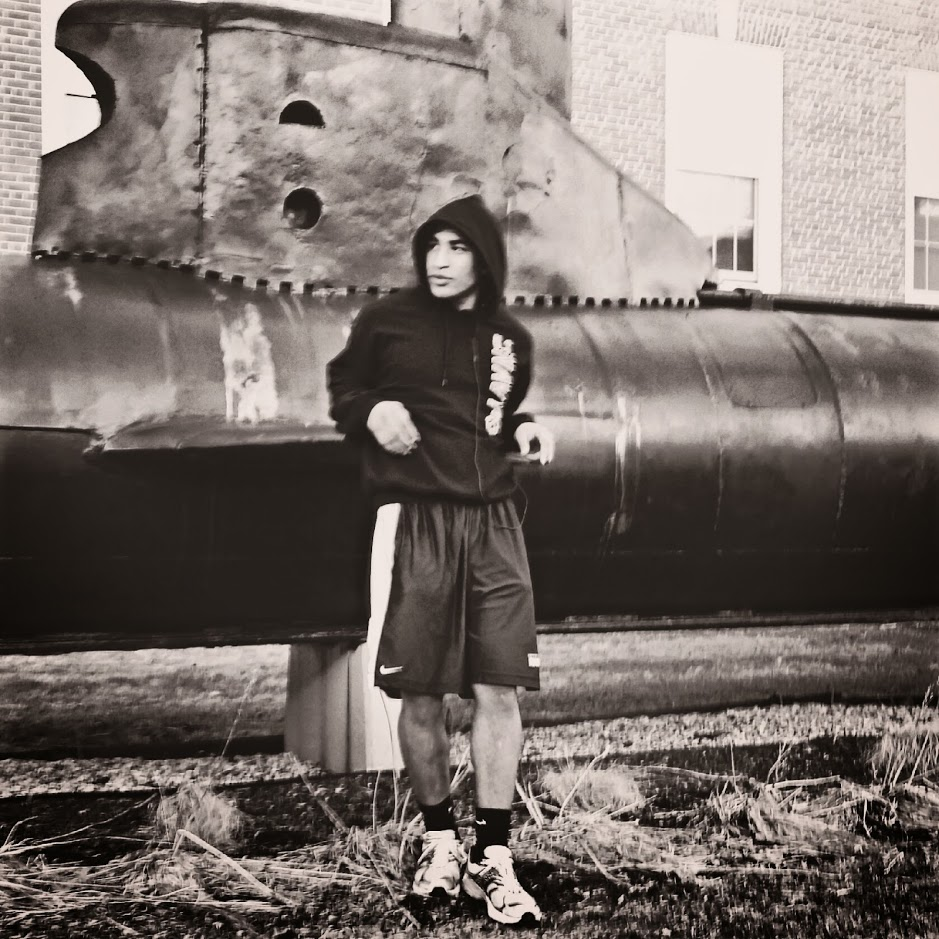

Shadow Boxing
By, SKEYE June 1, 2018
If I look to the sky, will he hear me?
If i close my eyes and listen, then would he see me?
I am lost without you, the world a confusing maze of right and wrong.
Where the rights one so humbly deserve, owed, can be shadowed by the once wronged.
I am plagued by sin, slowed by a heavy heart, and dettered by impulse decision.
I need you now more than ever, mind weakend by years of small incisions.
They've planted their seeds, their ideas so deeply rooted i no longer know my core.
Who am I? What do i want? The Journey feels so close to the end, yet i fear it is only the beginning.
Guide my heart as it ventures into the depths of these darken souls.
Steady my mind as i stand before the wicked, and steel my nerve as i stare down the enemy of my being.
For before me is the devil that has haunted me from birth.
The devil that has led me through the valley of the shadow of death.
That has whispered virus into my ear, and that has blackened my heart.
I see him now, clearer than ever, staring back into my soul.
As i reach far behind me, and swing with the force of the heavens.
I can see his face explode into thousands of pieces, his skin tearing scars into my fist.
no longer can he smile, no longer can he see.
The strings are cut and now I am free.
The demons have left, and the angels have taken their seats.
To see the Devil over my life, is no longer me.

About Me
Follow my path and take on the world with me June 1, 2018
Mauris neque quam, fermentum ut nisl vitae, convallis maximus nisl. Sed mattis nunc id lorem euismod placerat. Vivamus porttitor magna enim, ac accumsan tortor cursus at. Phasellus sed ultricies mi non congue ullam corper. Praesent tincidunt sed tellus ut rutrum. Sed vitauris neque quam, fermentum ut nisl vitae, convallis maximus nisl. Sed mattis nunc id lorem euismod placerat. Vivamus porttitor magna enim, ac accumsan tortor cursus at. Phasellus sed ultricies mi non congue ullam corper. Praesent tincidunt sed tellus ut rutrum. Sed vitae justo auris neque quam, fermentum ut nisl vitae, convallis maximus nisl. Sed mattis nunc id lorem euismod placerat. Vivamus porttitor magna enim, ac accumsan tortor cursus at. Phasellus sed ultricies mi non congue ullam corper. Praesent tincidunt sed tellus ut rutrum. Sed vitae justo condimentum, porta lectus vitae, ultricies congue gravida diam non fringillacondimentum, porta lectus vitae, ultricies congue gravida diam non fringillaae justo condimentum, porta lectus vitae, ultricies congue gravida diam non fringilla auris neque quam, fermentum ut nisl vitae, convallis maximus nisl. Sed mattis nunc id lorem euismod placerat. Vivamus porttitor magna enim, ac accumsan tortor cursus at. Phasellus sed ultricies mi non congue ullam corper. Praesent tincidunt sed tellus ut rutrum. Sed vitae justo condimentum, porta lectus vitae, ultricies congue gravida diam non fringilla.